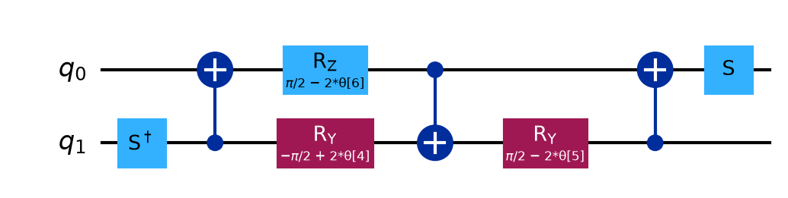

Hadron circuit compression · status · 03.11.2026 · for the meeting on Friday 06.11
6-step start for x = 200; the MPS gradient now runs in our script
Where we are, what the data shows, and what to decide on Friday.
1. Where we are
- Circuit: x = 200 (per step: kinetic 0.3, electric −0.226125, mass 0.0424264, mass signs per site), target T11, hadron start on the two centre sites. Our code builds the group's files gate for gate.
- Setup: train from a 6-step start (was 5), ZZ zeroed out (2 CNOTs per pair and electric block).
- Training: one script, three ways to get the slopes:
jax (exact), explicit (IBM's), and new: layer, a collaborator's MPS gradient.
Background (open if needed)
The three strengths: which angle each one is
Each number is a fixed rotation angle in radians, applied once per Trotter step: a physics strength times the time step dt = 0.0015. These numbers set the circuit; they are not the trained angles.
- Mass signs per site: −m on sites 0, 2, 4, …, +m on sites 1, 3, 5, … (even sites hold quarks, odd sites antiquarks). Both qubits of a site get the same sign, so along the qubits: − − + + − − …
- x = 100 → 200: kinetic 0.15 → 0.3 (doubles), mass 0.03 → 0.0424 (× √2), electric unchanged. The bigger pair-gate angle is why x = 200 needs the 6-step start.
- Link to training: the trainable circuit starts each pair and electric block at the angles that reproduce these gates exactly (KAK angle 10.313° for pair, 3.887° for electric); training moves them from there.
How jax gets the slopes
- It writes down every multiplication of the exact (untrimmed) overlap calculation, keeps every result, then runs the chain rule backwards over that record: all slopes at once, exact.
- Cost: memory grows with the circuit (about 50 GB at 32 qubits without the planner; it asked for 1.5 TB at 120 qubits). 32-bit by default.
Step by step: Circuit Backprop Workbook, section 7.
How explicit (IBM's gradient) gets the slopes
- It trains on trimmed MPSs (bond =
--training-bond). Two MPSs walk through the circuit gate by gate: the start state, and the target with the whole circuit undone.
- For each angle it computes one full MPS overlap with that gate's rotation inserted: one overlap per angle (thousands per training step at 120 qubits).
- Little memory, but the time grows with the number of angles; too small a bond trains a blurred circuit.
How layer (the MPS gradient) gets the slopes
- Forward pass: run the circuit layer by layer as a trimmed MPS, keeping the state before every 6th layer.
- Backward layer pass: undo the layers on the target, last layer first. At each layer, one sweep from the left and one from the right give every block's 16-number table, and from it the slopes of that block's angles.
- All slopes from about two to three MPS runs; memory set by the bond, not by the circuit; 64-bit.
Step by step on 3 qubits: Circuit Backprop Workbook, section 6; trimming and overlaps: Tensor Chain Workbook.
Zeroing out ZZ: what the KAK block is
- IBM's library rebuilds every two-qubit gate (pair, SWAP, electric) as one KAK block followed by a turn (ZXZ) on each of its two qubits.
- KAK(a, b, c) = exp(i(a X⊗X + b Y⊗Y + c Z⊗Z)): the three ways two qubits can act on each other, one angle each. On hardware it takes 3 CNOTs (picture below; the ZZ angle sits in the middle Rz).
- Pair and electric gates start with c = 0 (no ZZ part). Keeping c at 0 during training means 2 CNOTs instead of 3. SWAPs need all three (a = b = c = 45°), so they keep theirs.
- 12 qubits: CNOTs 347 / 351 → 301 / 301, two-qubit depth 82 → 72, fidelity −0.001 (vacuum / meson). Script option
--zero-out-zz.

Where the angles come from: Circuit Backprop Workbook, section 1.
2. Why 6 steps: the 5-step start is too small at x = 200
All rows trained with jax (16 qubits: 02.11; 20 qubits: 26.10). The MPS gradient has run at 12 and 16 qubits only (section 3).
- Each extra step costs about 110 CNOTs (20 qubits) and buys a large jump in fidelity: 5 → 6 steps cuts the error (1 − fidelity) by 3–4×.
- 40 qubits on the HPC with the 5-step start (CNOTs 2500 → 1120): x = 100 0.996 (meson) / 0.994 (vacuum); x = 200 0.909 / 0.844, flat. Same cause. The 6-step start at 40 qubits is running on the HPC.
3. The MPS gradient (--gradient layer)
It gets all slopes from one forward pass and one backward pass on trimmed MPSs, so its memory is set by the bond, not by the circuit (jax needed 1.5 TB at 120 qubits). Added to our script unchanged, with tests:
- 6 qubits: matches the exact answer (statevector) to 1e-14.
- 12 qubits: loss and all 1,087 slopes match jax (64-bit) to 2e-9.
- At the same training step the two agree. The MPS gradient then keeps improving a little because it works in 64-bit (jax runs in 32-bit and stops).
- Slower at these small sizes; its advantage is memory at large sizes. Cost per step grows with the bond (about bond³): CPU up to bond ~512, a GPU for bond 1024.
4. Next steps (to decide on Friday)
- ⬜ MPS gradient at scale: waiting for a collaborator's runs on the HPC: 20 → 40 → 120 qubits (120 at bond 1024 on a GPU), compared with jax.
- ⬜ x = 200 at 120 qubits, 6-step start: the vacuum target needs a bond above 1024 (norm violation 0.025 at 40 qubits).
- ⬜ Hybrid circuit (the professor's plan): T11 compressed to 6 steps, then 7 ordinary Trotter steps, reaching 15–17 time steps. Check it against the exact circuit at 12–20 qubits; count CNOTs and depth.
- ⬜ Question for the group: what fidelity is good enough for the observable (particle counts per site)? That sets how many steps the start needs.
Run it: hadron-aqc/scripts/README.md, section "3. Layer gradient". Existing checkouts: git pull && git sparse-checkout add hadron-aqc/layer_gradient.